Round 4: cute Tilo
Round-1 Kapi (left) next to cute Tilo (right)
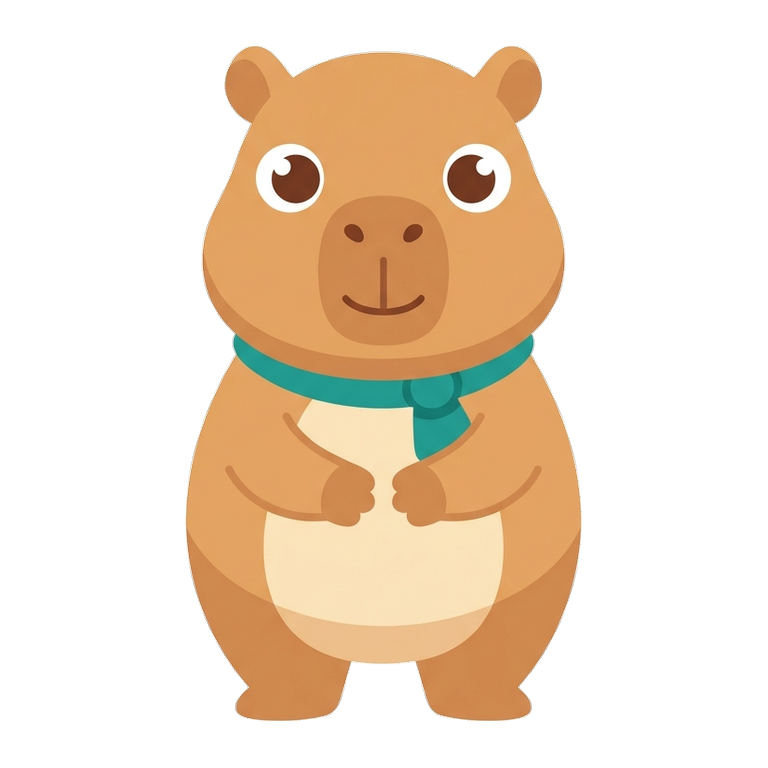
round-1 Kapi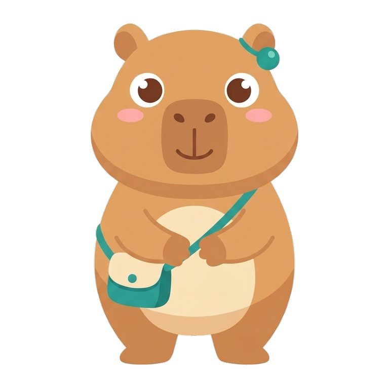
Tilo (variant A, chosen)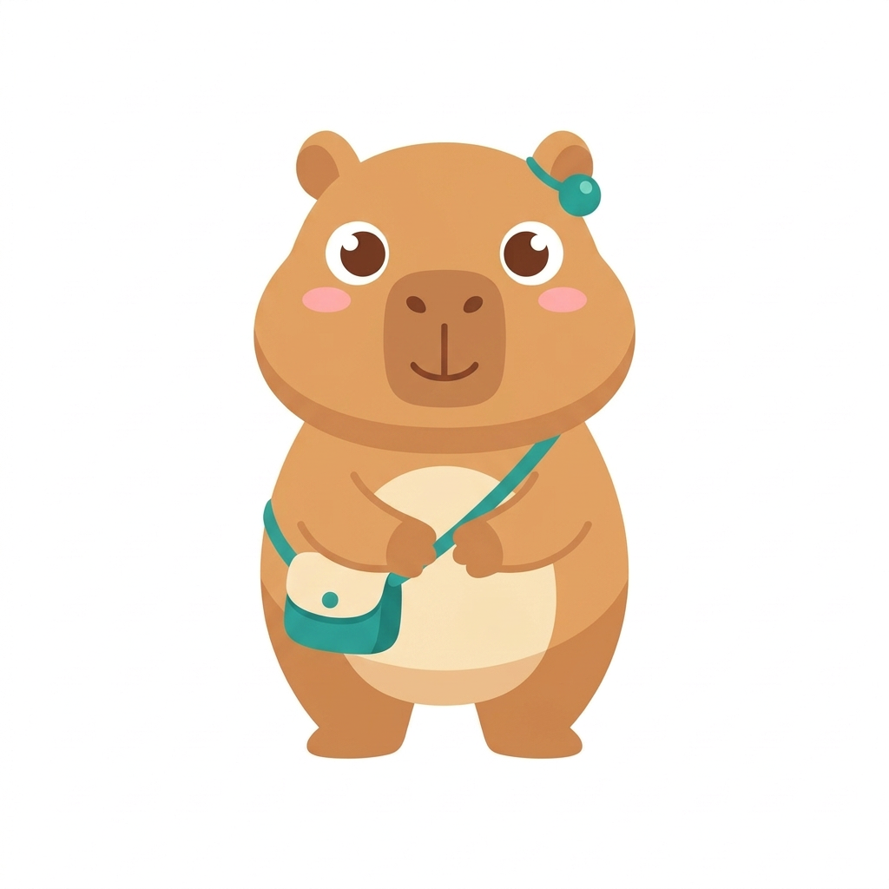
variant a (chosen)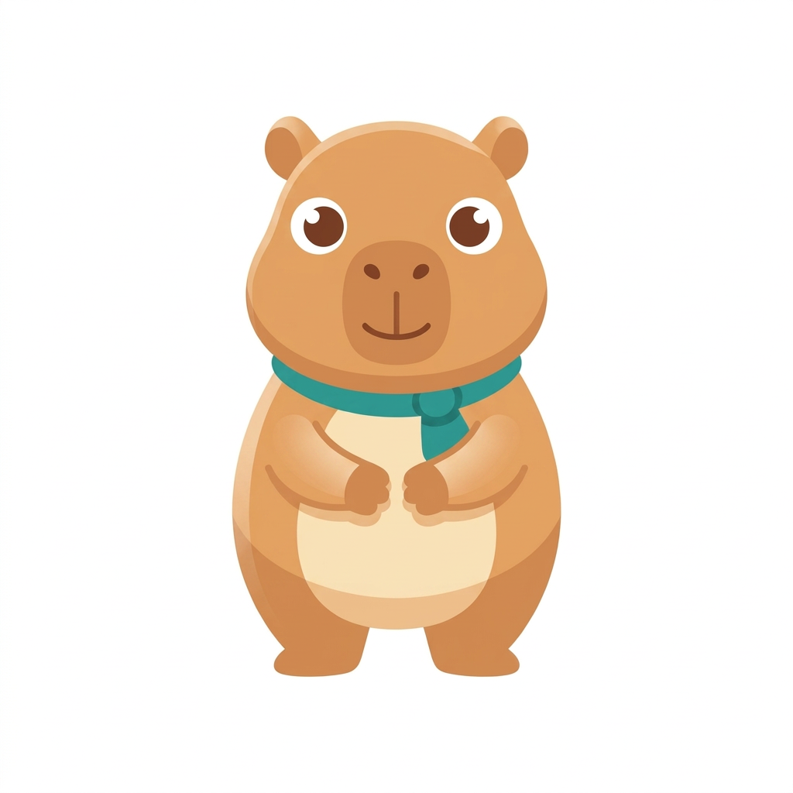
variant b (rejected)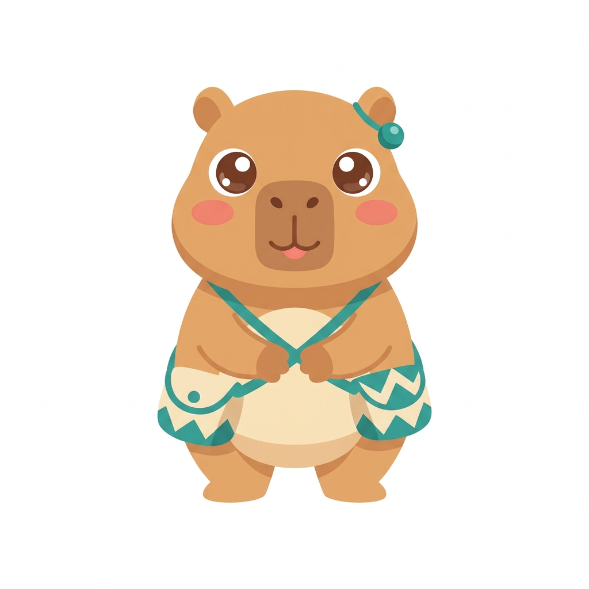
variant c (rejected)Teaching poses
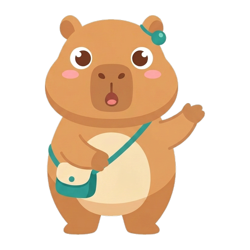
speaking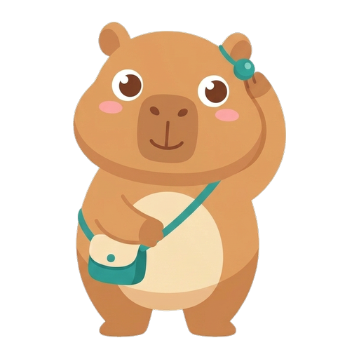
listening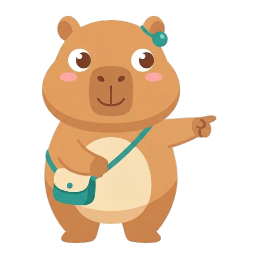
pointing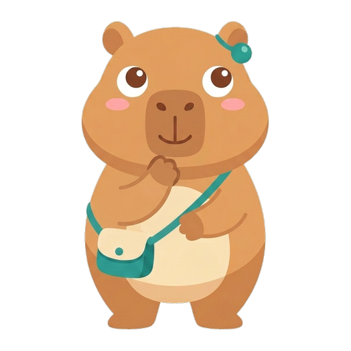
thinking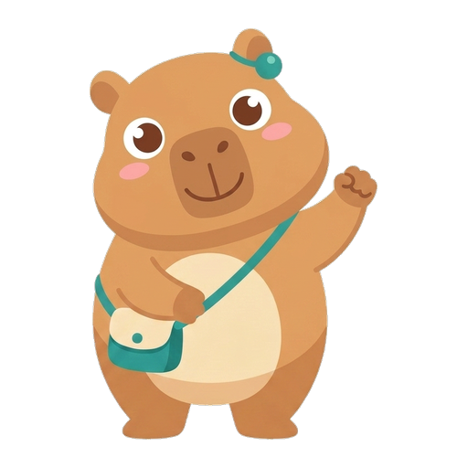
trying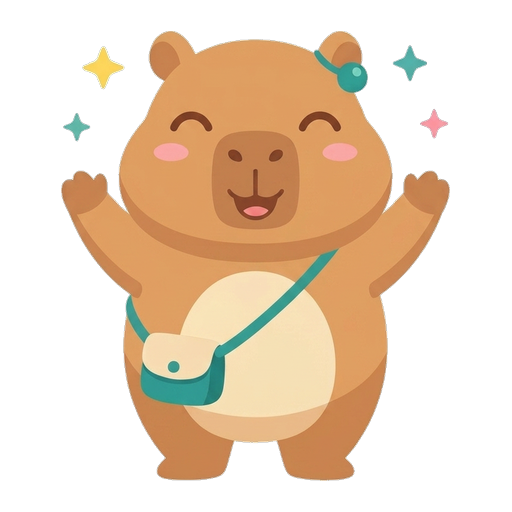
celebrating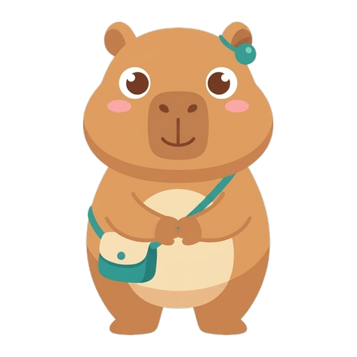
waitingFaces (shown at 128 px)
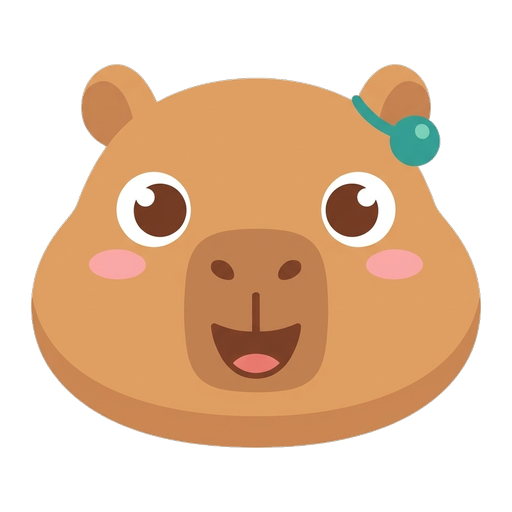
happy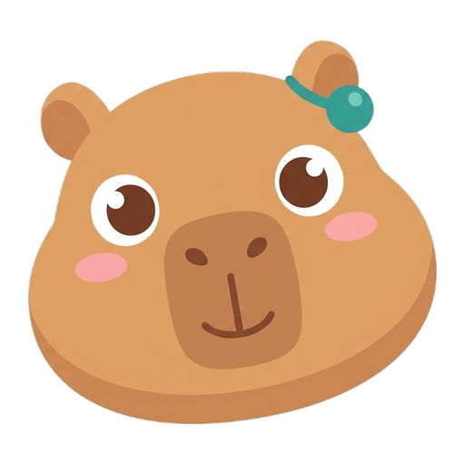
listening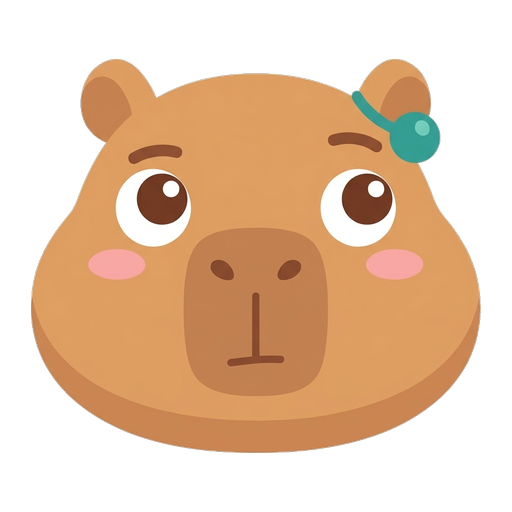
thinking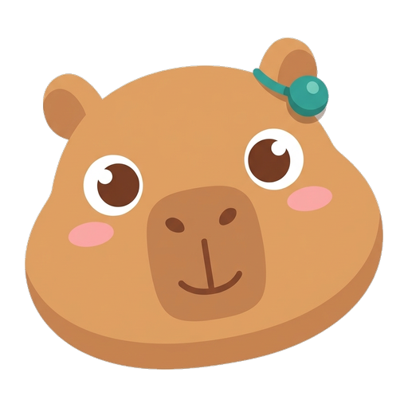
encouraging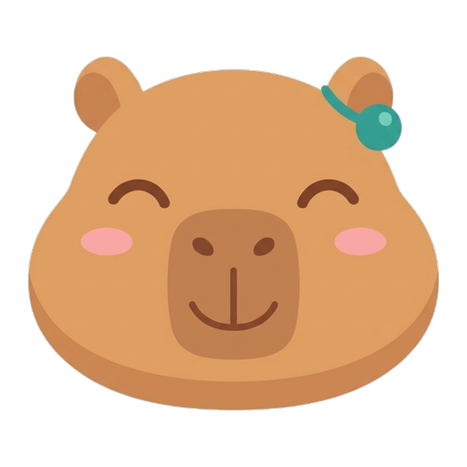
proud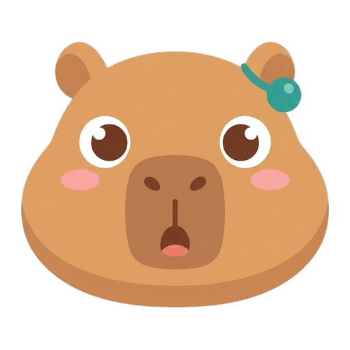
speakingMouth shapes (128 px)
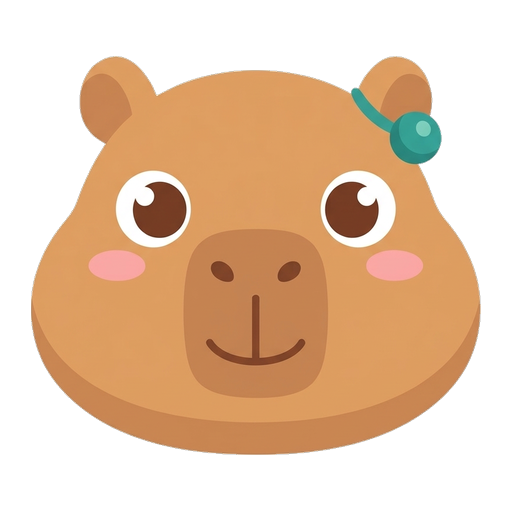
mmm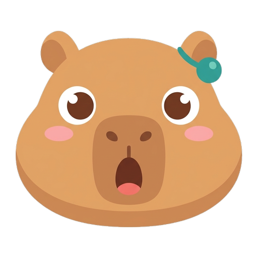
aaa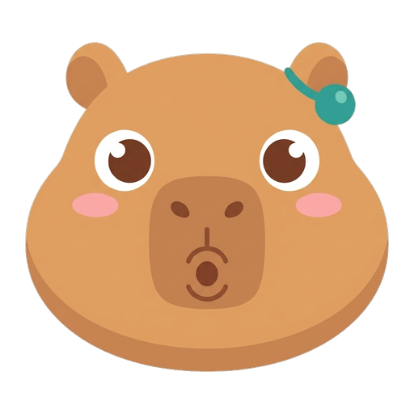
oooIcons